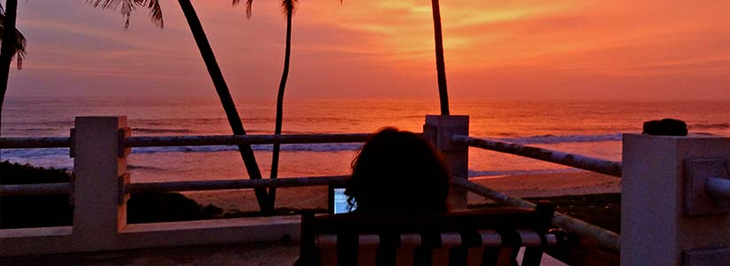
Trip Overview
Most people think of Kerala when they think of travelling in the south of India. But you have been there, done that. Now, come with us to Kerala’s under-the-radar neighbor. Experience a scenic coffee country, discover the fascinating legends of a warrior-like people, and soak in a culture and cuisine different from the rest of India. Rejuvenate along a blissfully virgin stretch of India’s west coast, witness the heartwarming hospitality of the fisherman folk, watch dolphins in the Arabian Sea, and undertake a utopic journey driving between the backwaters and white sand beaches. Come with us to explore the hidden gems of Karnataka!
This trail begins in Coorg, where you stay on a family-run organic farm in a traditional Coorgi village, unearthing the best-kept secrets of Karnataka’s hill country. Your rendezvous continues on a virgin beach in coastal Karnataka, where you are hosted by a fisherman family in a self-catering beach home, and serenaded by the waves of the Arabian Sea.
Please email us at untravel@indiauntravelled.com to plan and book your travels.
Trip Highlights
An all-organic experience: Relax on a farm where everything, from your stay to your meals, is locally or organically sourced, including all urban comforts.
Trace the journey of coffee from seed to cup at a coffee plantation.
Volunteer in the rice paddies: Transplanting of the rice lasts from June 15-August 15, and is quite an experience working with the skillful rice planters.
Kodava cooking: Sample and learn Kodava recipes that have been preserved for generations.
Tibetan culture: Visit a Tibetan settlement and lesser-known Buddhist Monasteries.
Mountain biking: Cycle along maize fields, rice paddies and quaint Coorgi villages.
Your own little beach paradise: A boutique beach home in coastal Karnataka, on a virgin golden sand beach.
Dolphin watching: Take a boat trip into the Arabian Sea to spot dolphins and swim.
Utopic drive: Ride a tuk-tuk along sleepy hamlets with the sea on one side and the backwaters on the other.
Local home-cooked food: Indulge in the warm hospitality and simple, organic food cooked with much love by a fisherman family.Please email us at untravel@indiauntravelled.com to plan and book your travels.
Brief Itinerary
Days 1 & 2: Farm stay in a traditional Coorgi village
The Hidden Gems of Karnataka trail can start in Calicut (Kozhikode) or Bangalore, both of which are well connected by international and domestic flights. Coorg, traditionally called Kodagu, is accessible by scenic bus journeys; 5-6 hours from Bangalore and 3-4 hours from Calicut. Car transfers can also be arranged.
In the backdrop of the Western Ghaats, the hill country of Coorg is a charming introduction to slow-paced village life in Karnataka. Sleepy hamlets, rice paddies, maize fields, coffee plantations and seasonal waterfalls welcome world-weary travellers to rejuvenate themselves amid nature. The fascinating culture and cuisine of the Kodava people, believed to be descendants of Alexandra The Great’s Indo-Greek soldiers, is among the most unique in India.
Your first stop is at Narendra’s Organic Farm in a traditional Coorgi village, surrounded by rice paddies, and flanked by the gentle hills of the Western Ghaats. Stay in a handcrafted hut, fitted with recycled fiberboards and tastefully furnished with all things local, organic or recycled. Lounge around your balcony, soak in the stunning views, watch birds and butterflies, get to know your host family, indulge in delicious Kodava and south Indian food, splash in the rice paddies, and enjoy the tranquility.
Explore the popular and offbeat sights of Coorg by bicycle or car. Discover quaint villages, visit a Tibetan settlement, mingle with the indigenous jungle tribe, trace the journey of coffee from seed to cup, and hike through the forests to the backwaters of Coorg. Off-road through secret trails of Coorg in the monsoon as the rain lashes carpets of greenery, and celebrate the Lhosar Festival in a Tibetan camp in February.
Days 3,4 & 5: Beach stay in a self-catering beach home.
Hop on a bus and drive through the wilderness of Karnataka (5-6 hours), through dense forests, lush plantations, quaint villages, and typical country scenery, to arrive in the small town of Kapu. Drive to the coast of Karnataka through winding by-lanes, and arrive at your next home – a self-catering beach house overlooking a pristine golden-sand beach and the roaring Arabian Sea!
Make yourself at home in the blue-and-white themed house, open up the quirky little windows to let the sea breeze in, and meet your hosts from a fisherman family in the nearby village. Sit out on the rooftop under the night sky, and let the waves of the sea put you into a deep slumber.
Spend your days experiencing village life by the sea, walk to the 113-year-old lighthouse at the end of the beach for a stunning view of the coast, indulge in the traditional cuisine of the region, simple (thick rice, seafood, seasonal veggies) but prepared with love by your hostess in her own house and delivered to you.
Join a local fisherman on his boat and row into the deep seas, for a dip in the waters and to spot dolphins swimming by; a truly magical sight! Ride the utopic road in a tuk-tuk, the backwaters on one side, the coast on the other, and sleepy hamlets with colorful houses and hammocks all along. Take the ferry to St Mary’s Island, which broke away from Madagascar years ago and still retains its unusual lava formations. Go for a spin on a speedboat, banana boat or water bike with a local boatman, or get your surf on at a learning centre nearby.
Optional add ons:
- Journey along the Best Kept Secrets of North Kerala at the start (or end) of this trip.
- Start the trip in reverse, and end off at a Private Island by the virgin backwaters of Kasaragod in North Kerala.
- Continue the trip to central Karnataka, and witness the majestic ruins and unusual rock formations of a 14th century empire in Hampi.
Please email us at untravel@indiauntravelled.com to plan and book your travels.
Costs
INR 17,000 per person on twin sharing.
INR 21,000 for a solo traveller
Price includes:
- Accommodation from days 1 to 5.
- Breakfast & dinner on days 1 to 5.
- Pick-up from & drop to Kushalnagar bus stop (in Coorg).
- Coffee Plantation visit in Coorg.
- Bicycles and cooking lesson while in Coorg.
- Pickup from & drop to Kapu bus stop.
- Utopic drive in a tuk-tuk with the backwaters on one side and the beach on the other in Kapu.
- Taxes where applicable.
Optional add ons:
- Day trip to Madikeri, the capital of Coorg
- Day trip to Bylakuppe, the Tibetan settlement in Coorg
- Off-roading through secret trails in Coorg (monsoons only)
- Trip to St Mary’s Island in coastal Karnataka
- Boat trip to the deep seas for dolphin watching / swimming
Price does not include:
- Airport transfers or transfers from Coorg to Kapu. Volvo (deluxe) and local buses are available. Car transfers can be organized at additional cost.
- Activities highlighted in red in the itinerary.
- Tips, shopping & personal expenses.
- Expenses arising out of unforeseen circumstances.
- Anything not mentioned in the inclusions.
*Rates may vary if travel dates fall in peak season.
Please email us at untravel@indiauntravelled.com to plan and book your travels.
Location:
Please email us at untravel@indiauntravelled.com to plan and book your travels.
Gallery
Coorg
- 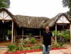Narendra, host at the farm
- 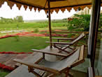View of the rice paddies and the hills beyond, from the balcony
- 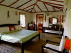The rooms at Narendra's Organic Farm
- 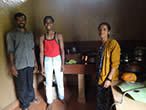Cooks and staff extraordinaire
- 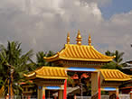Buddhist monastry at Bylakuppe
- 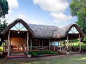Lounge and dining area at the farm
- 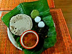Local organic meals at the farm
- 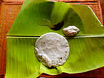Neer dosa for breakfast
- 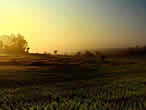The rice paddies on a misty morning.
- 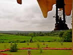Rejuvenating mornings
- 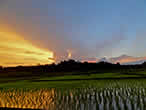Sunset on the paddies
- 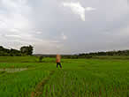Splashing on the rice paddies
- 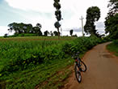Cycling through the countryside
- 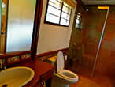For urban comforts, attached bathrooms with western amenities
Coastal Karnataka
- 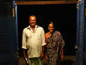Hosts, Ramesh-anna and Sarsu-akka
- 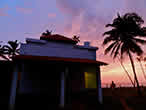The self-catering beach home
- 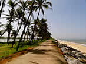On the utopic road
- 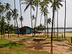Coastal Villages
- 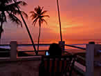Sunsets from the terrace of the beach home
 Can't get enough of these sunsets
Can't get enough of these sunsets- 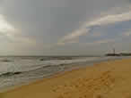The virgin beach at Kapu
- 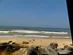The waters reflect the blue of the sky (not photoshopped!)
- 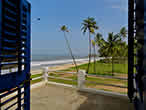View from the room!
- 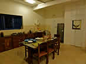Dining area
- 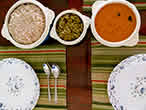Local curries for lunch
- 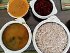Seasonal veggies cooked in the home of the fisherman couple
- 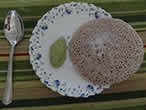Simple tasty breakfast
- 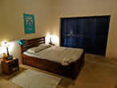Upstairs room at the beach home
- 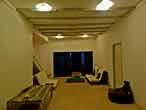Living area of the beach home

{kind=link}
{kind=link}
{kind=link}
{kind=link}
{kind=link}
{kind=link}
{kind=link}
{kind=link}
{kind=link}
{kind=link}
{kind=link}
{kind=link}
{kind=link}
{kind=link}
{kind=link}
{kind=link}
{kind=link}
{kind=link}
{kind=link}
{kind=link}
.jpg){kind=link}
{kind=link}
{kind=link}
{kind=link}
{kind=link}
{kind=link}
{kind=link}
{kind=link}
Please email us at untravel@indiauntravelled.com to plan and book your travels.
Reviews
To feature your reviews about this trip, please email them to untravel@indiauntravelled.com
Please email us at untravel@indiauntravelled.com to plan and book your travels.
Responsible Travel
How this trip makes a difference:
- All accommodations on this trail are built with locally sourced materials, in indigenous architectural style, and by local craftsmen.
- All accommodations on this trail give you a chance to interact closely with your hosts and the local community, and understand the culture and traditions of the region.
- The accommodations and activities on this trail are either offered by native families, or employ the local village folk, creating an alternate source of income through tourism.
- All food provided in the accommodations is freshly prepared in the host kitchen, using locally grown and locally or organically sourced ingredients.
- The revenues generated from this trip are reinvested to further the cause of responsible travel in the region and in India.
How you can make a difference on this trip:
- On your first stop on the farm, take the time to interact with your hosts and think of yourself as a guest at a family home. Please don’t expect room service!
- On your second stop at the self-catering beach home, please take some time to read through the introduction notes in the house and familiarize yourself with your surroundings. The fisherman couple that look after the house will be happy to help you out with any information you need.
- Carry a good water bottle and ask to refill drinking water at the accommodations. Refrain from buying numerous plastic mineral water bottles.
- Pack your bags with environmentally friendly things. Carry as little plastic as possible.
- Do not leave behind any non-biodegradable waste. Carry batteries and other toxic waste back to the cities where waste management is in place.
- Please dress appropriately so as to not draw unwanted attention.
- Respect the local culture and refrain from physical intimacy in public places.
- Avoid excessive consumption of alcohol and refrain from drugs, especially in public places.
- Seek permission before photographing people, so their privacy is respected.
- Do not pluck any medicinal plants & flowers, and do not disturb the wildlife.
Please email us at untravel@indiauntravelled.com to plan and book your travels.
Please email us at untravel@indiauntravelled.com to plan and book your travels.